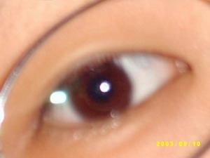

난 프로그래머다.
하루의 대부분을 컴퓨터 앞에 앉아 있는다.
출근하면 사무실에 내 컴퓨터 두대(개발용, 서버용)가 윙윙
퇴근하면 집에서 내 애물단지가 윙윙거리고 있다.
대충 계산해 봤는데 하루에 모니터를 보고 있는 시간이 10~12시간 정도 된다.
TV 를 이렇게 보고 있으면 머리도 눈도 돌아가버린다.
모니터는 85Hz 이상으로 깜빡이도록 셋팅해둬서 그나마 나은거다.
티비에 보니 컴퓨터에 집중하고 있는 사람은 눈을 깜빡이지 않는다고 한다.
그래서 눈이 금새 피로하게 되고 오래 지속되면 안구건조증이 생긴다는거다.
구체적으로 안구건조증이 어떻게 고통스러운지는 잘 모르겠는데 암튼 아픈건 확실하다.
예방하는법도 의외로 간단하다.
그냥 가끔 눈을 깜빡거리면 된다.
옛 어른들은 눈을 자주 깜빡이면 불안해보인다고 머라 하셨다지만 요즘은 애들 눈 함부로 쳐다보지도 못한다. 마주치면 피하지...
암튼 생각나는 김에 지금 눈을 몇번 깜빡여보자.
내 덕분에 몇명은 눈의 고통에서 다소 멀어졌을지도 모른다.